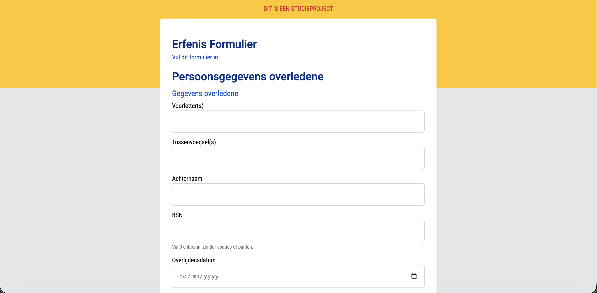
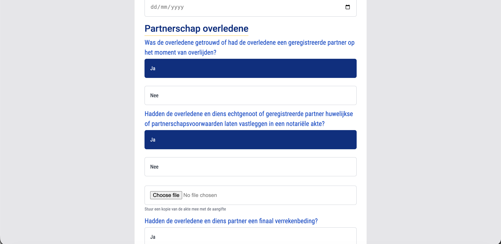
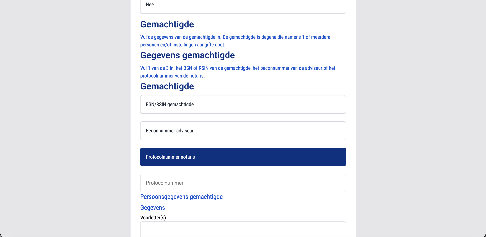
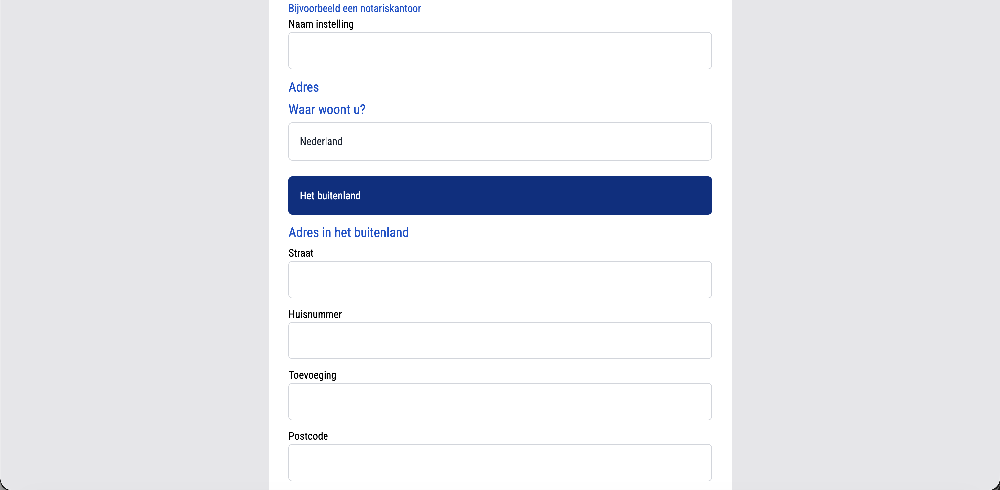

Browser Technologies
Project omschrijving
Voor Browser Technologies heb ik een erfenisformulier van de Belastingdienst nagebouwd in de huisstijl van de NS. De opdracht was om een robuust formulier te maken dat ook werkt zonder JavaScript, toegankelijk is voor iedereen en goed functioneert in oudere of beperkte browsers. Het formulier vraagt stap voor stap informatie over erfenis en erfgenamen op.
Plannen, ontwikkelingen en reflecties
Progressive enhancement was het centrale thema van dit project. Het formulier moest als basis gewoon werken met alleen HTML: validatie, stappen, foutmeldingen. En pas daarna JavaScript als verbetering erbovenop. Dat was een andere manier van denken dan ik gewend was: normaal bouw je met JS in je hoofd, nu moest ik beginnen zonder.
Ik heb gewerkt met progressive disclosure: je laat pas informatie zien wanneer die relevant is. Zo worden velden voor een tweede erfgenaam pas zichtbaar als de gebruiker aangeeft dat er meerdere zijn. Verder heb ik de startViewTransition API gebruikt voor animaties bij het doorstappen, en aandacht besteed aan foutafhandeling zodat iemand altijd snapt wat er mis gaat en hoe het op te lossen.
De grootste uitdaging was de validatie zonder JavaScript werkend maken via HTML5 constraint validation. Dat kende ik nog niet goed, maar het werkt verrassend goed als je het goed opzet.
Afbeeldingen




Uitkomsten en inzichten
Dit project heeft me echt anders laten nadenken over hoe je een website bouwt. Progressive enhancement betekent dat je mensen met een trage verbinding, een oude browser of een schermlezer niet uitsluit. Dat is eigenlijk gewoon de juiste manier van werken. Ik heb ook veel geleerd over toegankelijkheid: focus management, aria-labels, foutberichten die screen readers voorlezen.
De NS-huisstijl toepassen op iets van de Belastingdienst was ook een grappige combinatie, maar het dwong me om écht na te denken over huisstijlcomponenten en consistentie.